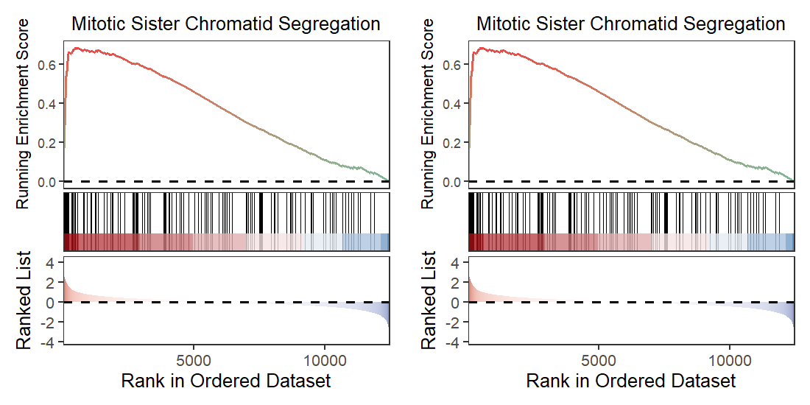

Chapter 8 Transform data frame to gseaResult
A data frame containg the GSEA results can not be ploted with enrichplot functions. enrichplot only recgnizes gseaResult object. So it is a problem to re-plot data if you do not save gseaResult object when you do enrichment analysis. Here we supply functions dfGO2gseaResult and dfKEGG2gseaResult can convert back to gseaResult object. This allows you do varous plots on this object.
First we do enrichment analysis:
library(clusterProfiler)
library(org.Hs.eg.db)
library(enrichplot)
library(GseaVis)
# load test data
data(geneList, package="DOSE")
# check
head(geneList)
# 4312 8318 10874 55143 55388 991
# 4.572613 4.514594 4.418218 4.144075 3.876258 3.677857
# KEGG enrich
kk <- gseKEGG(geneList = geneList,
organism = 'hsa',
minGSSize = 120,
pvalueCutoff = 0.05,
verbose = FALSE)
go <- gseGO(geneList = geneList,
ont = "BP",
keyType = "ENTREZID",
OrgDb = org.Hs.eg.db,
pvalueCutoff = 0.05)
KK_df <- data.frame(kk)
# check
head(KK_df[1:3,1:5])
# ID Description setSize enrichmentScore NES
# hsa04110 hsa04110 Cell cycle 139 0.6637551 2.827249
# hsa05169 hsa05169 Epstein-Barr virus infection 193 0.4335010 1.927343
# hsa05166 hsa05166 Human T-cell leukemia virus 1 infection 202 0.3893613 1.748318
go_df <- data.frame(go)
# check
head(go_df[1:3,1:5])
# ID Description setSize enrichmentScore NES
# GO:0000070 GO:0000070 mitotic sister chromatid segregation 151 0.6795449 2.956225
# GO:0000819 GO:0000819 sister chromatid segregation 184 0.6542189 2.891093
# GO:0098813 GO:0098813 nuclear chromosome segregation 236 0.6307606 2.8685158.1 dfGO2gseaResult
dfGO2gseaResult can covert gseGO output data frame back into gseaResult object, first we check the structures of gseaResult object:
Besides you need a annotation object:
Let’s make a comparison:
Comparison for gsea plot:
GseaVis:
praw <- gseaNb(object = go,geneSetID = "GO:0000070")
pnew <- gseaNb(object = test_go,geneSetID = "GO:0000070")
plot_grid(praw,pnew)